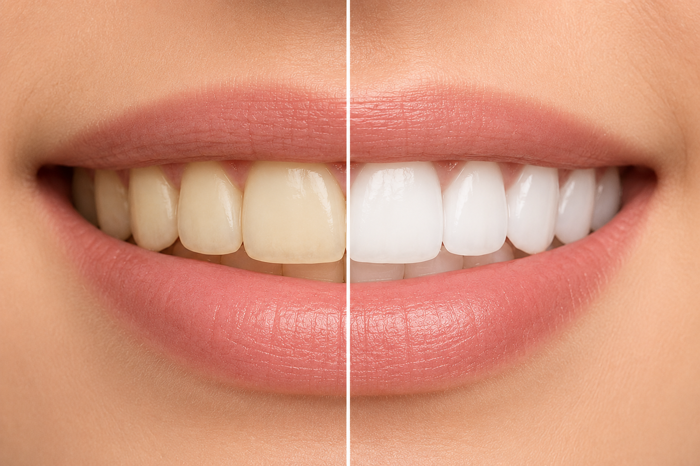

بلیچینگ دندان چیست؟

بلیچینگ دندان یکی از روشهای محبوب برای سفید کردن دندانها و از بین بردن لکههای سطحی است.
مزایای بلیچینگ دندان
- افزایش زیبایی لبخند
- روشی سریع و غیرتهاجمی
- افزایش اعتمادبهنفس
- بدون آسیب به ساختار دندان در صورت انجام صحیح
ماندگاری بلیچینگ چقدر است؟
ماندگاری بلیچینگ معمولاً بین ۶ ماه تا ۲ سال است و به سبک زندگی و رعایت بهداشت دهان بستگی دارد.
مراقبتهای بعد از بلیچینگ
- پرهیز از مصرف چای و قهوه در روزهای اول
- عدم مصرف دخانیات
- رعایت بهداشت دهان و دندان